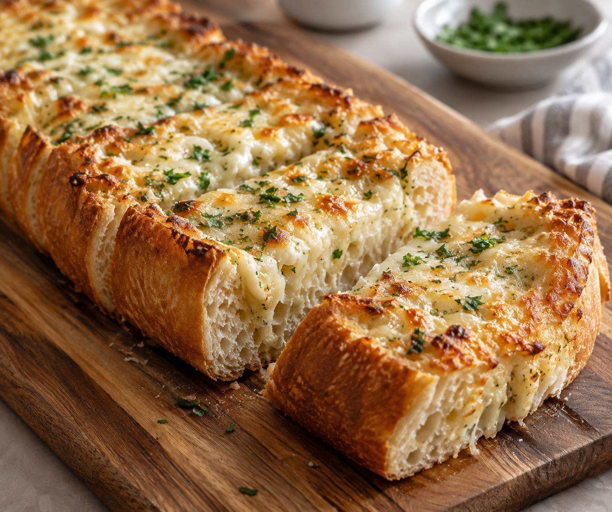

Home
Alfredo Garlic Bread

Description
This garlic cheese bread is topped with creamy Alfredo sauce, garlic butter, and melted cheese. Crispy on the outside and soft inside, it’s an easy side for your favorite meal.
Ingredients
- 1 loaf French bread
- ¼ cup butter, softened
- 3 garlic cloves, minced
- ½ cup Alfredo sauce
- 1½ cups shredded mozzarella
- ¼ cup grated Parmesan
- 1 tablespoon chopped parsley (optional)
Steps
- Heat oven to 400°F (200°C).
- Slice bread in half lengthwise. Place cut-side up on a baking sheet.
- Mix butter and garlic, then spread over bread.
- Spread Alfredo sauce on top. Sprinkle with mozzarella and Parmesan.
- Bake for 10–15 minutes, until cheese melts and edges turn golden.
- Sprinkle with parsley, slice, and serve warm.